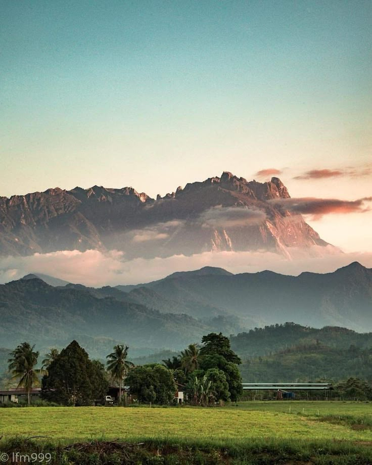

Gunung Kinabalu terletak di Taman Kinabalu, Sabah, Malaysia. Ia merupakan puncak tertinggi di Banjaran Crocker dan gunung tertinggi di Malaysia. Gunung ini terletak kira-kira 80 kilometer dari bandar Kota Kinabalu.